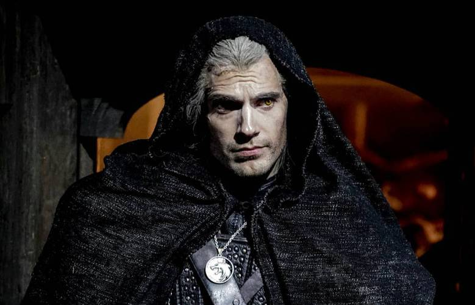

Sobre The Witcher
The Witcher é uma franquia de fantasia que surgiu durante a década de 1980, na Polônia. Em 1986, o autor Andrzej Sapkowski enviou um conto chamado “O Bruxo” para um concurso da revista Fantastyka. A história acompanha um mutante matador de monstros, contratado por um rei para reverter uma maldição. O conto não venceu a disputa - ficou em terceiro lugar -, mas teve resposta positiva o bastante para que Sapkowski continuasse a escrever histórias utilizando o tal mutante, chamado de Geralt de Rivia. Assim, durante o restante dos anos 80, o autor continuou expandindo esse universo com vários contos isolados - mais tarde reunidos em duas coletâneas, O Último Desejo e A Espada do Destino. Já em 1994, Sapkowski elevou sua criação com O Sangue dos Elfos, início de uma saga de cinco romances estrelados por Geralt e outras personagens recorrentes dos contos, publicando um livro por ano até 1999.
Livros
- O último desejo
- A Espada do destino
- O sangue dos elfos
- Tempo do desprezo
- A torre da andorinha
- Batismo de fogo
- A dama do lago
- Tempo de tempestade
Ponto de encontro
Nosso ponto de encontro para falarmos sobre os livros